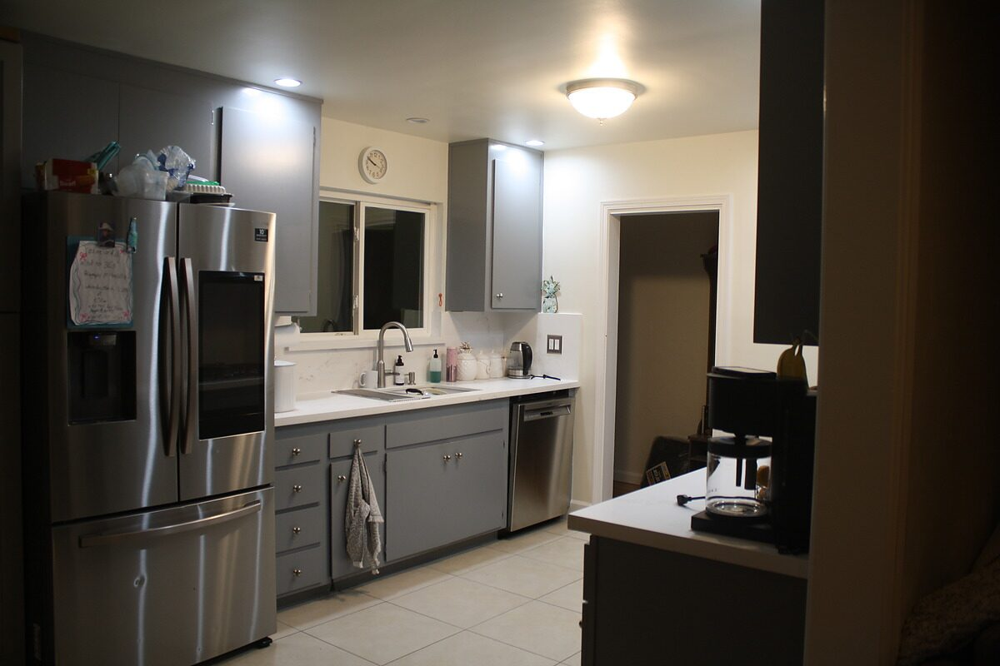
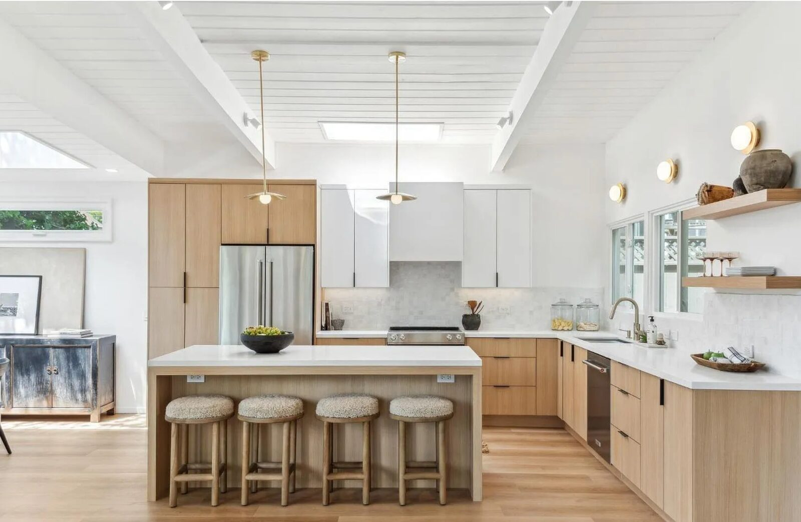

Our Portfolio
Projects & Gallery
Featured Work
Transformations That
Transformations That
Speak for Themselves
Real projects, shown before and after.

Before After
After
Marin County Residence — Full Kitchen Remodel
Complete gut and rebuild. Grey cabinets out, custom white shaker cabinetry in. New island with quartz countertops, wood slat bar seating, hardwood floors, and a statement range hood.

Kitchen RenovationTerra Linda Home — Kitchen Renovation
Complete kitchen transformation: vaulted ceiling treatment, custom wood and white shaker cabinetry, quartz island, designer brass pendant lighting, and open shelving.
Completed Work
Project Gallery


Your Turn
Like What You See?
Like What You See?
Let's Work Together.
Every project in this gallery started with a single conversation. Reach out and let's talk about yours.